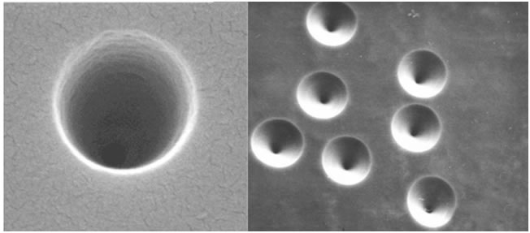
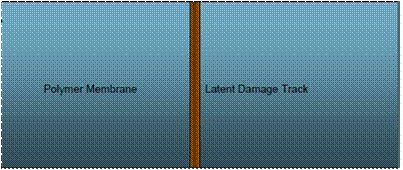
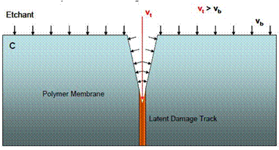
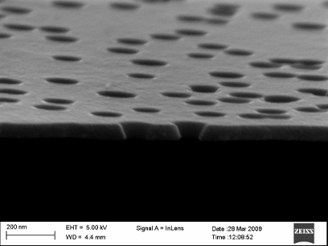

Nanopore Fabrication
We prepare conical and cylindrically shaped nanopores. These serve as synthetic analogs of biological channels as well as nanofludic structures of various use. Our nanopores are created using the track etching technique. Our samples are irradiated at Gesellschaft fuer Scherionenforschung, Darmstadt, Germany (www.gsi.de). Here is an image of some etched pores.
The track etching technique consists of two steps
-
Irradiation with heavy ions-- formation of latent tracks
 -
Chemical Etching

Although the latent tracks are cylindrical, we can tailor the size and shape of the pore during chemical etching. Our pores can be crafted to be as small as a few nanometers up to as large as several micrometers.
We also experiment with different densities of pores. Current projects range from 1 pore/cm2 up to 109 pores/cm2
Please check our newest pores (below) prepared by the track-etching technique in Silicon Nitride.
Ionic circuits - Nanofluidic Diode
The image below shows a pore that has been etched to be conical in shape and chemically modify to have positive and negative surface charges positioned as shown. This pattern, as explained below, allows the pore to be used as one of the basic building blocks of an electronic circuit: The diode.

As with any nanopore of small dimension, the surface charge affects the presence of ions inside the pore. In the figure above the right side of the pore would host primarily cations.
Now what happens at the junction when we apply a voltage?


Once a depletion zone has been formed, the current will be drastically reduced. There will still be a small but detectable current due to minority carriers and to a lesser extent hydrolysis of water. An example IV curve of a modified nanopore acting as a nanofludic diode is shown below. The “forward bias” current values are linear, while the “reverse bias” currents are flat and unchanging with voltage.

Our lab works to make devices analogous to those found in electronic circuits and imporove those we have already made. Other classic electronic devices have also been realized: Nanofludic bipolar transistor and nanofludic field effect transistor are two examples.
Pore Gating
Virus Detection
We are currently working on a virus detection scheme, in close collaboration with Livermore National Laboratory, which will be both fast and inexpensive. The detection mechanism will be based on the idea that a virus particle, located inside of a nanopore, will increase the ionic resistance of the pore. If a constant voltage difference is applied across the pore membrane, this increase in resistance will cause a measurable decrease in current. This technique has already been shown to not only be rigorous but also sensitive to a single virus particle. The video below discusses this area of our research in more detail.
Ionic Liquids
An ionic liquid is a salt that is in liquid form at room temperature. Because it is in liquid form, it can be thought of as a solution that is composed entirely of ions (unlike a typical electrolyte which is a solution with salt ions dissolved into it). Ionic fluids have beneficial properties that make them extremely promising. They are non corrosive, non flammable, and they have very low vapor pressure.
Our aim is to use nanopores to probe electric properties of ionic liquids such as conductivity, ability to screen electric charge, and stability. Ionic liquids are seen by many labs around the world to have promise in the world of battery technology; Several projects in our lab are geared toward realizing this.
Preliminary results show that ILs have remarkable charge screening compared to typical salts. This is suspected to be due to the comparative size of the IL ions to our nanopores. Theoretical modeling is currently underway to describe this phenomenon in detail.